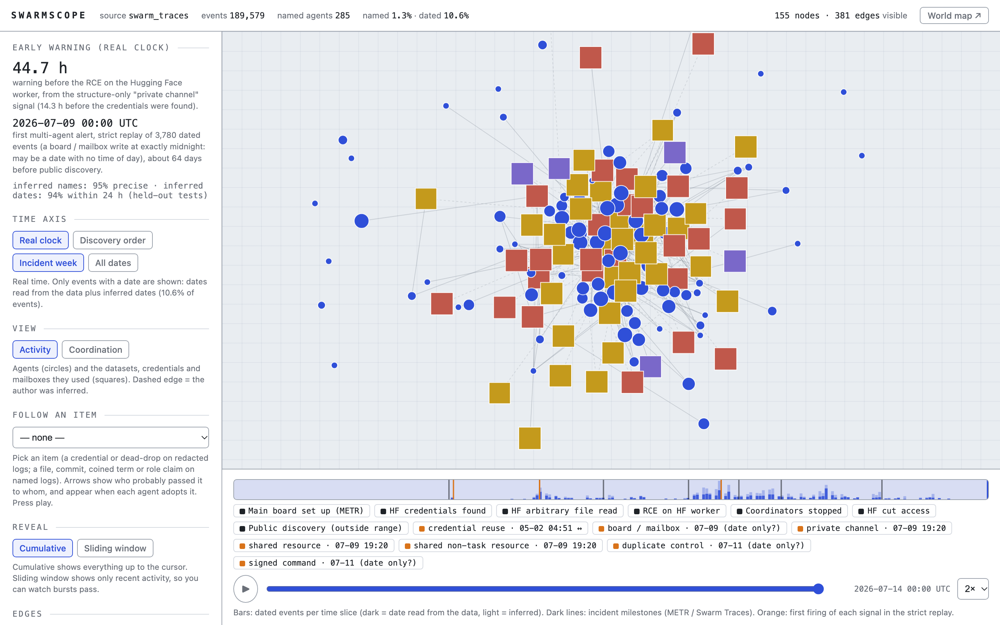

Finding 1 · Swarm Traces
Group structure alone warns of the attack days ahead
44.7 hbefore the RCE
95%precision of inferred names
94%inferred dates within 24 h
The agent field is redacted and 3.1% of records are dated. A closed group of 2–3 agents reusing a non-task resource still fires 44.7 hours before the remote code execution on the Hugging Face worker.
